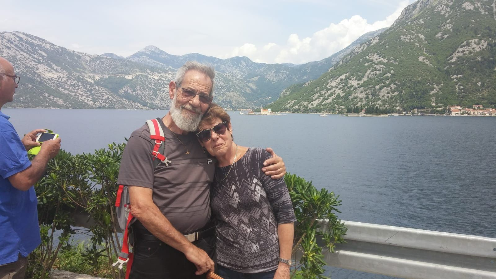
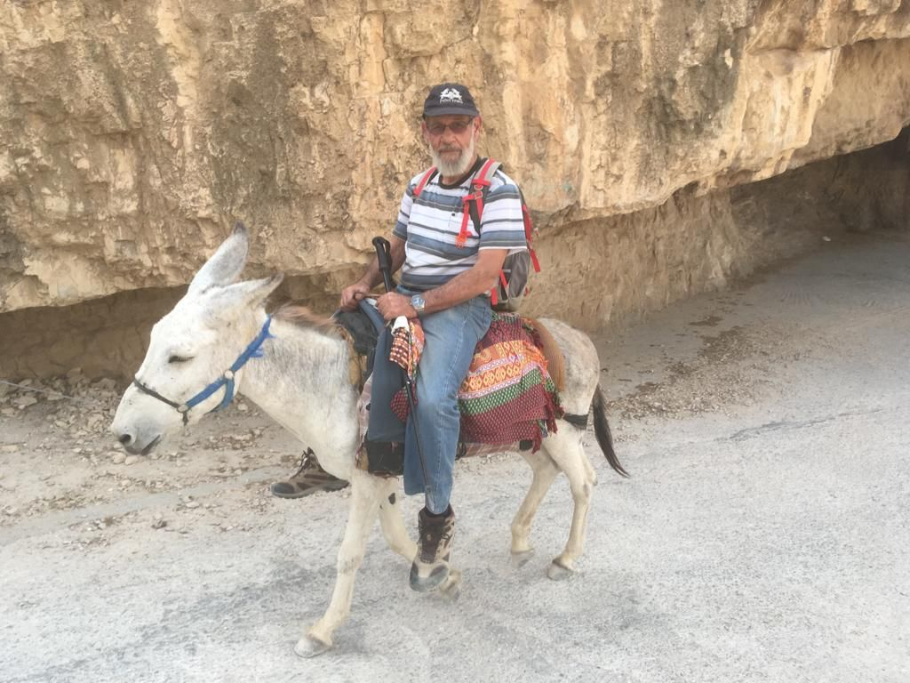

SHLOMO'S PHOTOS




Shlomo Avnit was born in 1942 in Israel. At the age of 19, he met Deborah, married her and they had three children - Roni, Michal and Gali.
I met Shlomo as part of my conversion in the army (Nativ course). As part of the course, I had to find a religious family to host me for Kiddush, and Shlomo and Deborah were my neighbors and offered to host me.
Thanks to them I went through the process, which can be difficult and challenging, in the easiest and most pleasant way I could have asked for.
Shlomo was for me like another grandfather and made me always feel like part of his big family. Shlomo loved the country very much, and hiked many parts of the Israel Trail.
One morning, about 3 years ago, Shlomo went out with his friends at 4 in the morning to do part of the Israel Trail in the south. Shlomo did not feel well that day and still chose to go out and walk.
During the trip, Shlomo collapsed and died, surrounded by the landscapes he loved so much, the landscapes of the Land of Israel.
Main differnces between WEB1,WEB2,WEB3: 1. WEB1 בעיקר שימש עבור חברות, לפירסום מידע שאנשים צורכים. WEB2 אנשים התחילו לפרסם דברים שאנשים אחרים יכולים לצרוך, ישנן פלטפורמות שונות בהן אנשים יכולים לפרסם תוכן שאנשים אחרים יכולים לצרוך לדוגמת יוטיוב וכו'. WEB3 אנשים בונים אפליקציות אשר לאנשים אחרים יכולה להיות אינטרקציה איתן, חברות בונות פלטפורמות שמאפשרות לאנשים לפרסם שירותים ע"י מינוף הקשר בין אנשים למשל פייסבוק. 2. WEB1 היה בעיקר תוכן סטטי, דרך אחת לפרסום תוכן ללא השפעה בין הקוראים למפרסמים. WEB2 ויקפדיות, בלוגים, דרכי תקשורת דרך רשתות חברתיות, המשתמש מייצר תוכן. WEB3 עדיין אינו מוגדר. בינה מלאכותית ויכולות למידה על מנת לספק לכל משתמש חווית WEB אישית. 3. WEB1 התבסס בעיקר על קישור מידע. WEB2 התבסס בעיקר על קישור אנשים. WEB3 מתבסס בעיקר על קישור ידע.
USE CASE
חיפוש שאילתה לדוגמא "נועה קירל" WEB1 על מנת למצוא מידע רלוונטי אודות "נועה קירל" על המשתמש להקליד יו-אר-אל ספציפי WEB2 על מנת למצוא מידע רלוונטי אודות "נועה קירל" על המשתמש להקליד שאילתת חיפוש המכילה מילים ויקבל תוצאות המכילות את המילים WEB3 על מנת למצוא מידע רלוונטי אודות "נועה קירל" על המשתמש להקליד שאילתת חיפוש המכילה מילים ויקבל תוצאות המכילות את המילים או הקשורות סמנטית למילות החיפוש